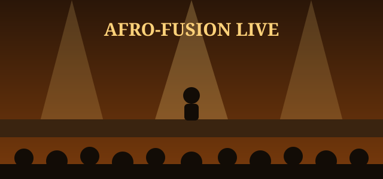

Welcome
Burna Boy is a Grammy-winning Nigerian singer, songwriter, and performer from Port Harcourt. He blends Afrobeats, dancehall, reggae, hip-hop, and the Afrobeat legacy of Fela Kuti into a sound he calls Afro-fusion.
This site honors his journey from Port Harcourt to sold-out stadiums around the world.
Read His History See His Top Songs
Afro-fusion live: the energy of a Burna Boy show.